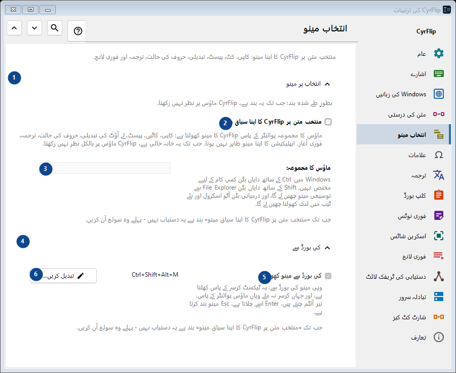
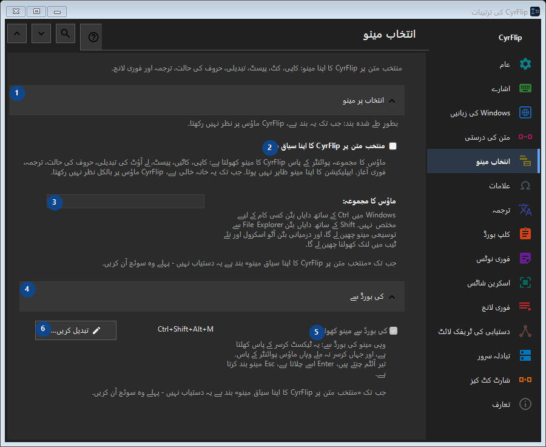

انتخاب مینو
مقصد
منتخب متن پر CyrFlip کا اپنا مینو: کاپی، کٹ، پیسٹ، تبدیلی، حروف کی حالت، ترجمہ اور فوری لانچ۔


استعمال کی ترتیب
ترتیبات فوراً لاگو ہوتی ہیں۔ کوئی لازمی ترتیب نہیں؛ نیچے کے گروپ استعمال کریں۔
عناصر
1. انتخاب پر مینو
درج شدہ کارروائی کے لیے یہ حکم استعمال کریں۔ قبول کرنے سے پہلے تصدیق پڑھیں۔
آپ کے شارٹ کٹ2. منتخب متن پر CyrFlip کا اپنا سیاق مینو
ماؤس کا مجموعہ پوائنٹر کے پاس CyrFlip کا مینو کھولتا ہے: کاپی، کاٹیں، پیسٹ، لے آؤٹ کی تبدیلی، حروف کی حالت، ترجمہ، فوری آغاز۔ ایپلیکیشن کا اپنا مینو ظاہر نہیں ہوتا۔ جب تک یہ خانہ خالی ہے، CyrFlip ماؤس پر بالکل نظر نہیں رکھتا۔
آپ کے شارٹ کٹ3. ماؤس کا مجموعہ
جب تک «منتخب متن پر CyrFlip کا اپنا سیاق مینو» بند ہے یہ دستیاب نہیں - پہلے وہ سوئچ آن کریں۔ یہ عنصر ابھی دستیاب نہیں۔ پہلے خصوصیت فعال کریں یا اندراج منتخب کریں۔
آپ کے شارٹ کٹ4. کی بورڈ سے
درج شدہ کارروائی کے لیے یہ حکم استعمال کریں۔ قبول کرنے سے پہلے تصدیق پڑھیں۔
آپ کے شارٹ کٹ5. کی بورڈ سے مینو کھولیں
جب تک «منتخب متن پر CyrFlip کا اپنا سیاق مینو» بند ہے یہ دستیاب نہیں - پہلے وہ سوئچ آن کریں۔ یہ عنصر ابھی دستیاب نہیں۔ پہلے خصوصیت فعال کریں یا اندراج منتخب کریں۔
آپ کے شارٹ کٹ6. تبدیل کریں - کی بورڈ سے مینو کھولیں
درج شدہ کارروائی کے لیے یہ حکم استعمال کریں۔ قبول کرنے سے پہلے تصدیق پڑھیں۔
آپ کے شارٹ کٹ